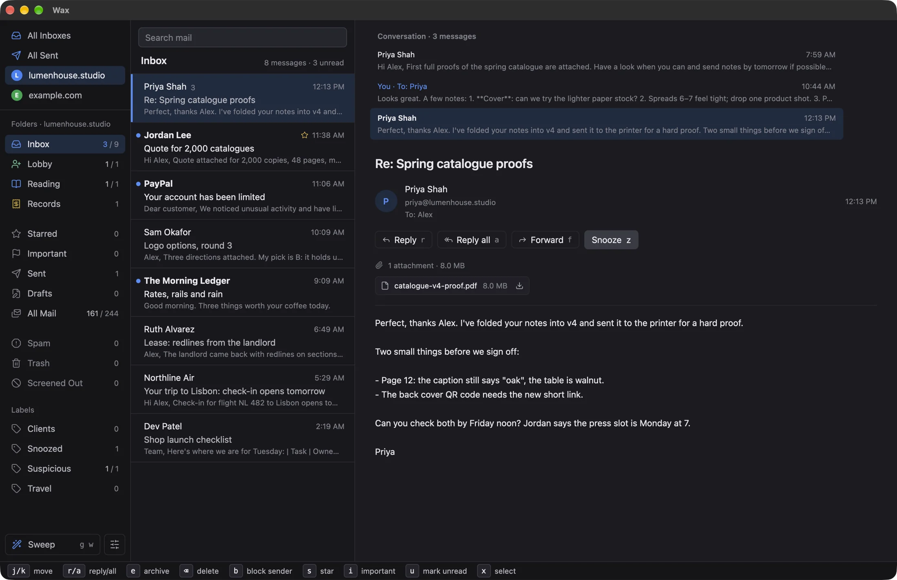
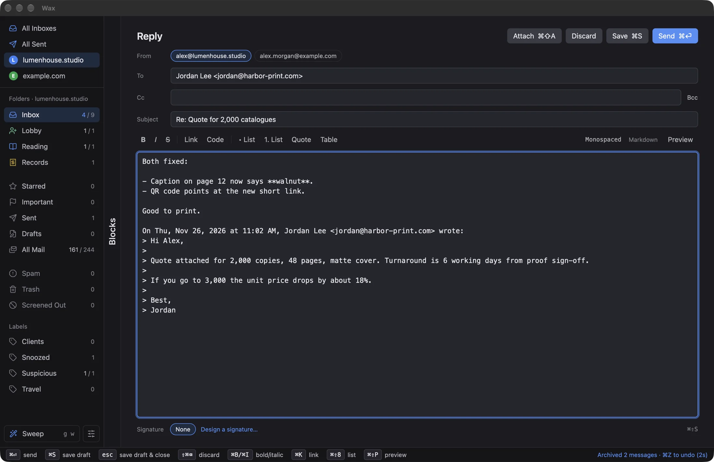
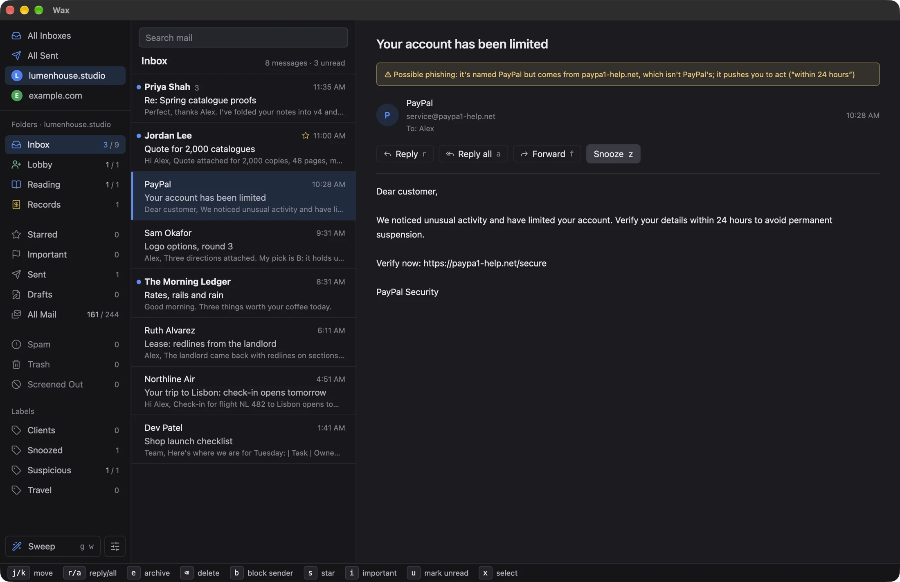
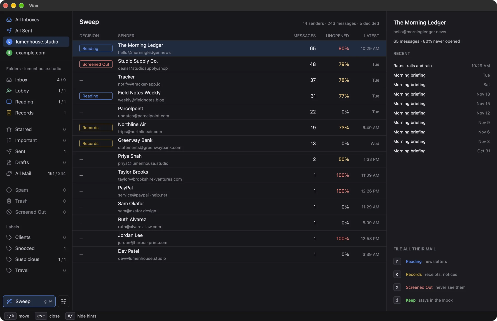
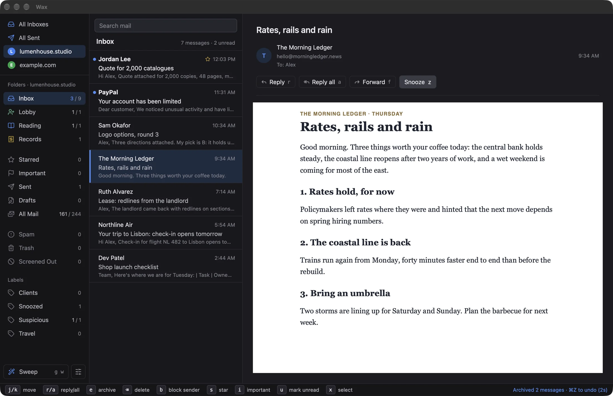
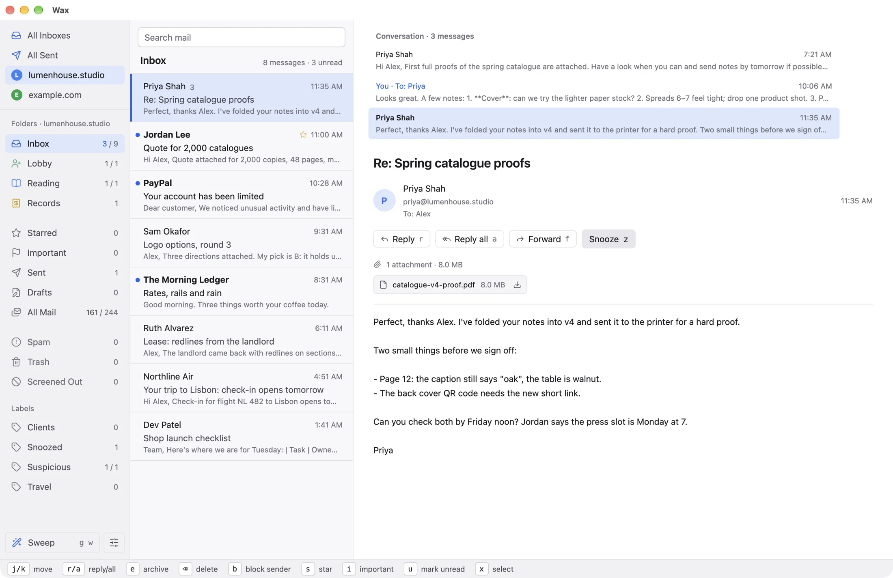
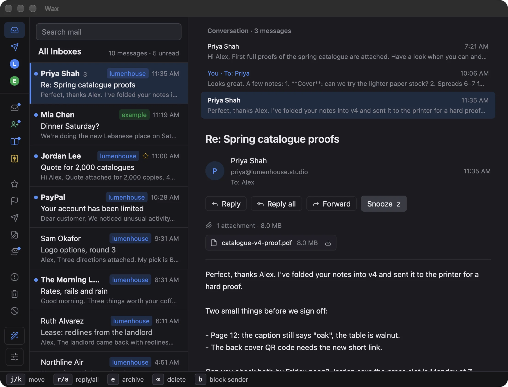
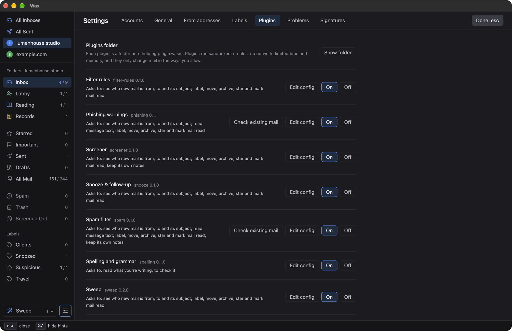
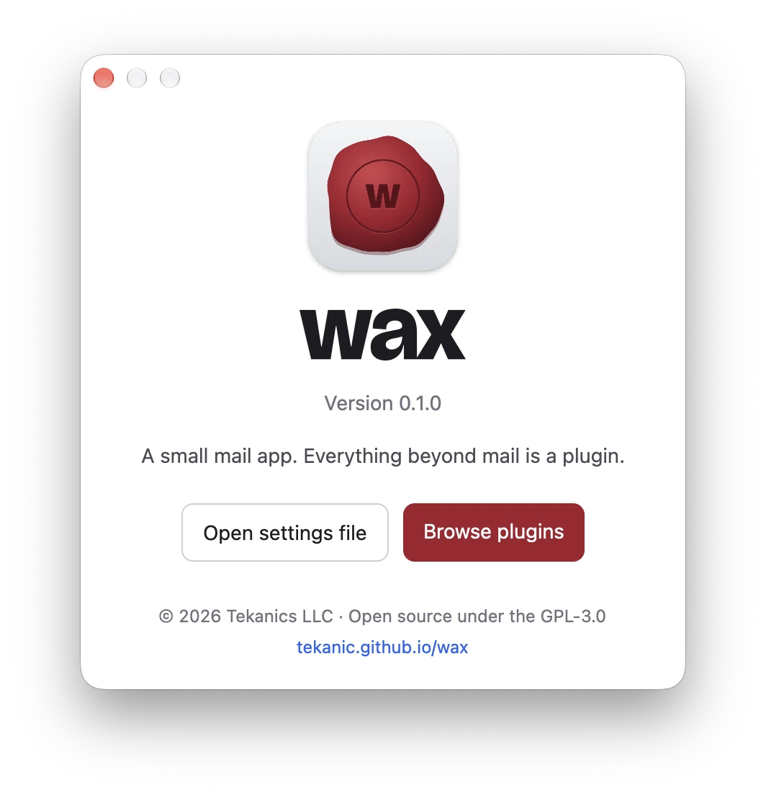

wax
Mail, fast. Extend it with plugins.
Written in Rust, drawn on the GPU with GPUI (the framework behind Zed), and backed by a SQLite cache on your Mac, so folders open the moment you click and search reaches mail you haven't opened. The core reads, writes and files your mail; everything else is a plugin you choose.
Free and open source (GPL-3.0). Early release: Gmail and Google Workspace accounts, macOS only.
A quick tour
Every screenshot is the real app, filled with made-up mail.
Reply in Markdown
Write with bold, lists, links and real tables, and Wax sends clean HTML with a plain-text copy. Quotes read like the message, not its tracking links.
Eight seconds to look it over after you send, and one key to pull it back.
r reply · a reply all · ⌘⏎ send

Warned before you click
The Phishing plugin spots lookalike senders, brand names from the wrong domain, links that don't go where they say and pressure wording, and puts the reasons above the message.
It checks new mail, the mail you already have, and anything you move out of Spam.

The Sweep
Every sender, ranked by how much they send and how much of it you never open. One key files their past and future mail: Reading, Records, Screened Out or keep.
g w opens it

Newsletters, minus the tracking
HTML mail renders properly in a sandbox with scripts off and remote images blocked until you load them, so tracking pixels never fire. Links open in your browser.

Any Zed theme
Wax reads Zed's theme files, so every Zed theme works as it is. Pick a light one and a dark one and Wax follows your Mac.

Fits any window
Narrow the window and the sidebar becomes a rail of icons; widen it to an ultrawide and the message stays a readable column. All Inboxes tags each message with its account.

Plugins you switch on
Each plugin says what it needs in plain words and gets nothing until you switch it on. They run sandboxed with no files or network.

Yours to read and change
Wax is free and open source under the GPL-3.0. About Wax shows the version you're running and opens your settings file, a plain text file you can edit by hand.

What the core does
Everything here works today, on several Gmail accounts at once.
Every action has a key
The bar at the bottom shows only the keys that apply where you are. e archives, r replies, l labels.
Opens instantly, works offline
Every header is cached on your Mac, so folders open at once and search covers mail you haven't opened.
Conversations
Mail is grouped into threads, newest first, your replies included. Archive, label or mark a whole conversation in one go.
Everything you've sent
All Sent gathers sent mail from every account. Search it by who you wrote to, the subject or what you said.
Signatures, laid out
Several per account, designed in the app with logos and links, and switched per message.
Your settings are files
Accounts, rules, signatures, keys and themes are plain text you can read, edit, back up or keep in git.
Hands stay on the keys
A few of the defaults. Change any of them in keymap.toml; the guide lists them all.
- jk move
- e archive
- # delete
- r reply
- a reply all
- f forward
- l label
- z snooze
- x select
- s star
- g i go to Inbox
- g w the Sweep
- / search
The rest is plugins
Plugins are WebAssembly, run sandboxed with no files or network, and get only the access you grant in Settings → Plugins. These come with Wax.
- The SweepRanks every sender by volume and how often you open their mail. One key files their past and future mail.
- ScreenerA first email from someone new waits in the Lobby until you let them in.
- SnoozePuts a message away until the day it matters, and reminds you when nobody has replied.
- PhishingFlags lookalike senders and links that don't go where they say, with the reasons above the message.
- Filter rulesOne line per rule: label, move or star new mail by sender or subject.
Next: a spam filter that learns from what you move, spelling and grammar while you write, and an MCP server so your AI assistant can search and draft with the access you allow.
# ~/.config/wax/plugins/snooze/config.toml # "tomorrow" and "next week" mean this hour: morning = 8 # ~/.config/wax/plugins/phishing/config.toml label = "Suspicious" trust = "mycompany.com" brand = "Acme Bank: acmebank.com"
Why it's built this way
Wax makes a few choices on purpose. Here is each one and the reason for it.
Native, not a web page
Wax is written in Rust on GPUI, the framework Zed is drawn with. There's no Electron and no bundled browser, so scrolling and resizing keep up with your display and the app is a small native binary. The one web view is the one that shows HTML mail, and it's locked down.
A small core, and plugins for the rest
The core reads, writes and files mail. The Screener, Snooze, the Sweep, phishing warnings and filter rules are plugins built on the same interface anyone can use, so every opinion about how you should handle your mail can be switched off or replaced.
Plugins get only what you grant
Each plugin runs in WebAssembly with no files, no network, 64 MB of memory and a time limit. It says in plain words what it needs to see and do, and anything beyond that is refused. One that keeps running over its time is switched off. Plugins see new mail before you do, so a message the Screener holds back never flashes into your Inbox.
Every message is untrusted
HTML mail opens in a sandboxed WebKit view where scripts never run. Remote images and tracking pixels wait until you load them, and links open in your browser, not inside Wax.
Fast because it's local
Every header is cached on your Mac in SQLite, so folders open at once, search covers mail you haven't opened, and reading works offline. The cache holds only what can be fetched from Gmail again, plus your unsent drafts.
No Wax account, no Wax server
Wax talks to Gmail and Google sign-in directly. Your tokens stay in the macOS Keychain. Apart from images you choose to load, the only servers Wax contacts are Google's.
Settings are text files
Accounts, rules, signatures, keys and themes live in
~/.config/wax. Edit them in any editor and Wax picks up the change when you save; back them up or keep them in git. Themes use Zed's format, so Zed's themes work as they are.Write in Markdown, send real email
You write in Markdown and Wax sends clean HTML with the plain text alongside. Every send waits eight seconds so you can take it back.
GPL for the app, MIT for plugins
The app is GPL-3.0, so it stays open. The plugin interface is MIT, so a plugin can use any licence you like.
Install
There's no signed download yet. For now, build Wax from source on an Apple silicon Mac.
- Install Rust from rustup.rs.
- Clone the repository:
git clone https://github.com/tekanic/wax.git && cd wax - Build and install:
scripts/install.sh. Wax and its plugins land in your Applications folder and Wax opens. - Add a Google OAuth desktop client and sign in from Settings → Accounts; the guide walks through it.
- Switch on the plugins you want in Settings → Plugins.